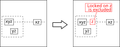
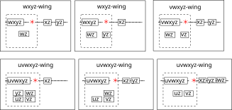
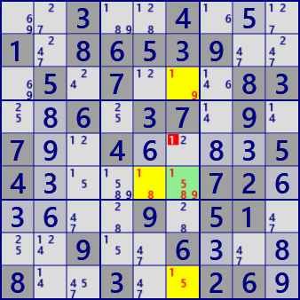
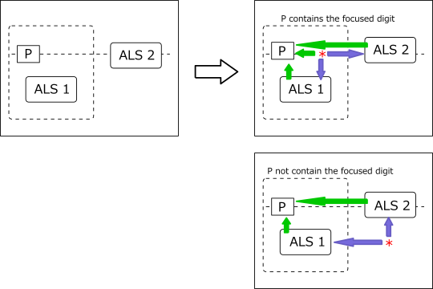
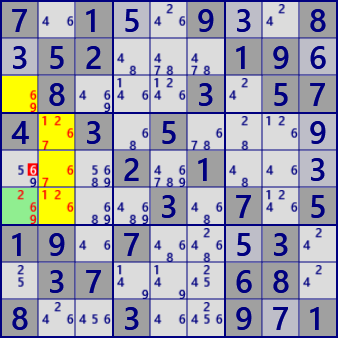
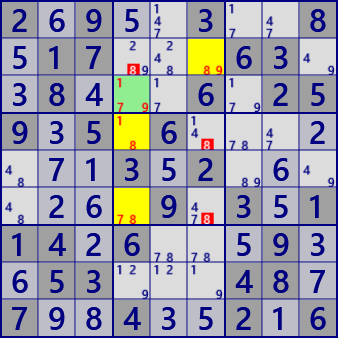

XYZ-Wing（基本形）
XYZ-Wingは、進化します。
XYZ-Wingは、ブロックと行（または列）の交差を用いる解析アルゴリズムです。
候補数字がxyzのセルに着目したとき、同じ行に属する他のセルの候補数字がxzで、同じブロックに属する他のセルの候補数字がyzとします（左図）。
このとき、着目セルと同じブロック・行のセルから候補数字zが除外できます（右図）。行は列に置き換えても同様です。

候補数字とセル数を次数としたとき、4次以上の解析アルゴリズム、WXYZ-Wing(4次)、VWXYZ-Wing(5次)、UVWXYZ-Wing(6次)があります。 いずれの場合も、軸となるセル以外はbivalue(候補数字が2つ)セルです。 また、 3次の場合は行とブロックにそれぞれ1セルの配置でしたが、4次以上ではその配置には様々なバリエーションがあります（次の図）。 いずれも*印のセルはLockedにあり、このセルから数字Zが除外されます。 ただし、”全てのセルに着目数字があり、着目セル以外は全てbivalueセル”の条件は相当に厳しく、4次以上のパターンは稀にしか現れません。 bivalueの条件を緩和する方法(XYZ-WingEx）は、後半で示します。

この解析手法のポイントは、あるセルに着目したとき、そのセルの影響圏にあるbivalueセルを行・ブロック（または列ブロック）で集計すると着目セルの候補数字に一致する場合のLockedです。 解析アルゴリズムは次のとおりです。イメージ図のとおりに順に組み立てれば、容易にアルゴリズムが構成できます。
- 候補数字の数が指定次数のセルについて、順に着目セルとして以下を繰り返す。
- 着目セルの属するブロックを求める。
- 着目セルに含まれる候補数字を、順に着目数字として以下を繰り返す。
- 着目セルに関連し、かつbivalueのセルのビットパターンP0con(Bit81型）を求める。
- P0conから着目ブロック内分を抽出する（Pinとする）
- 着目セルを軸とする行または列を指定して以下を繰り返す(housu番号を指定する）
- P0conから、指定行（または列）上でかつ着目ブロック外を抽出する（Poutとする）。
- PinとPouの候補数字を求める（FreeBinとFreeBoutとする）
- FreeBinとFreeBoutの和集合が着目セルの候補数字に一致することを確認する。
- 着目ブロック内の着目行(または着目列）に着目数字を候補に持つセルを探す（これが除外されるセル・数字）。 除外できるセル・候補数字があるとき、（高次）XYZ-Wingが成立する
以上で調べるセルが選択された。
XYZ-Wingの例を示します。(左:XYZ-Wing 右:WXYZ-Wing)


8.9..3..4.24...61..7...6.297.2.4.......3.2.......5.1.225.1...4..47...83.1..7..2.5
..3..4...1.86539...5.7...83..6.37.9.7..4....54.....72.....9.51...9..6...8..3..26.
XYZ-WingALS
XYZ-Wingは軸となるセルとbivalueセルの組合せのアルゴリズムでしたが、
組合わせるブロック内セル群とブロック外セル群はそれぞれがALSを形成しています。
そこで、bivalueの条件を外し、軸となるセルとブロック内ALSとブロック外ALSの組合せに拡張しても、XYZ-Wingの論理が成立します。
次の図はXYZ-Wing(ALS)のイメージです。
セル*の着目数字Xが真のとき、
ALS1、ALS2がLockedSetとなり、その結果が軸セルPの候補数字に影響する関係を示しています。
軸セルPが着目数字Xを含まないとき(右下図)は、セル*は、
両ALS内の着目数字全てと関係を持てる位置でも可能です。

XYZ-Wing(ALS)の成立条件と解析アルゴリズムは次のように構成できます。
- ALS管理クラスを用いて、全てのALSを生成する。
- 着目セルを選択セル（着目セルの候補数字の数が次数となる。次数指定で軸セルを選ぶのでもよい）
- 着目数字Xを設定する。着目数字は軸セルに含まれない数字でもよい（これは基本形からの拡張）
- 軸セルの行または列を選択する（以下では行選択で解説）
- 選択行で、かつブロック外にある、着目数字Xを含むALS2を選択
- 軸を含むブロック内で、かつ選択行を除く位置にある、着目数字Xを含むALS1を選択
- タイプ1:軸セルが着目数字Xを候補に含む場合（右上図）: ブロック内の着目行（軸セルは除く）にある着目数字は除外できる。
- タイプ2:軸セルが着目数字Xを候補に含まない場合（右下図）: ブロック内の着目行（軸セルは除く）にある着目数字は除外できる（タイプ1と同じ）。 また、着目ブロック外、着目行外で、ALS1とALS2の全ての着目数字に関係する着目数字は除外できる。
このように選んだALS1、ALS2は軸セルに対し、影響を及ぼせる位置にある。また、
（軸セルの候補数字）⊂（ALS1の候補数字）U（ALS2の候補数字） は必要条件。
XYZ-Wing(ALS)の例を示します。


7.1..9..8.52...19..8...3.574.3.5.......2.1.......3.7.519.7...3..37...68.8..3..9.1
2.9..3..8.17...63..8...6.259.5.6.......3.2.......9.3.114.6...9..53...48.7..4..2.6